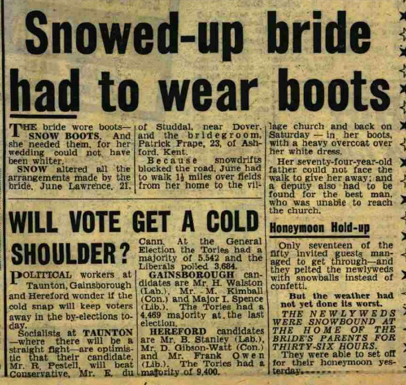

June Daphne Pansy Frape (née Lawrence) 1934 - 2011
[ Home ] | [ Calendar ] | [ Surnames Index ] | [ Census Index ] | [ Family History ]The child of Thomas Lawrence (a builder) and Florence Lawrence, June Lawrence, the first cousin once-removed on the mother's side of Nigel Horne, was born in Eastry, Kent, England on May 14, 19341,2 and. She married Patrick Frape (with whom she had 4 surviving children Robin Michael, Lawrence John, Anita Rosemary and Virginia Mary) in Thanet, Kent, England on Feb 11, 19564.
During her life, she was living at The Lodge, Studdal, Kent on Sep 29, 19391; in Studdal, Kent, England in 1956; and at 28 St. Peters Road, Margate, Kent in 2005.
She died on Oct 4, 20113.
Parents
- Thomas William was born on Aug 9, 1881
- Florence Eva was born on Nov 23, 1906
Citations
- 1939 Register - Findmypast (was recorded at this address)
- England & Wales births 1837-2006 - Findmypast
- England & Wales Government Probate Death Index 1858-2019 - Findmypast
- England & Wales Marriages 1837-2005 - Findmypast
Media
June Lawrence

Daily Mirror - 14 Feb 1956

England & Wales births 1837-2006 - BMD/B/1934/2/AZ/000702/141
1939 Register - TNA/R39/1822/1822J/002/14
England & Wales marriages 1837-2005 - BMD/M/1956/1/AZ/000957/074
England & Wales Government Probate Death Index 1858-2019 - GBOR/GOVPROBATE/B/2011-2012/00046145
Family Tree

Generated by ged2site. Last updated on Jun 11, 2024